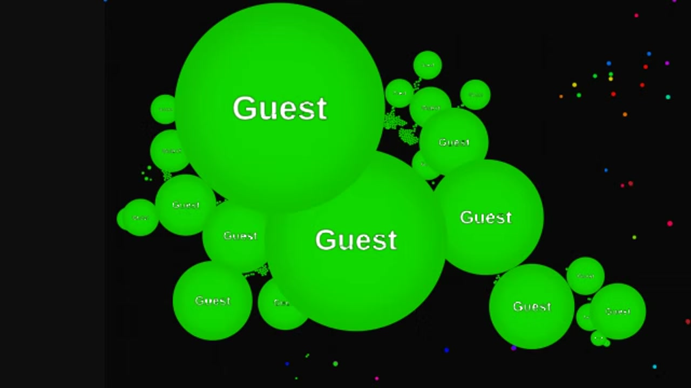
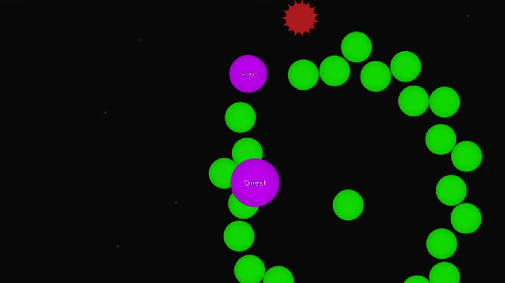
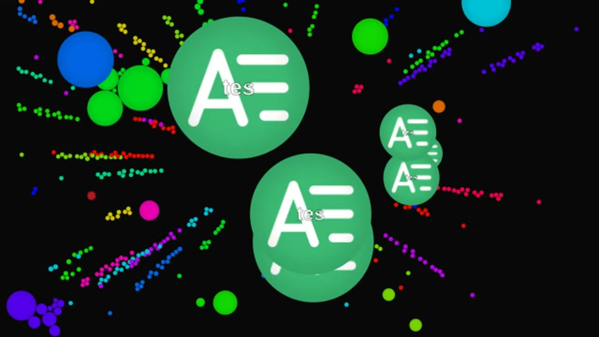

Introduction
Alis.io is a thrilling multiplayer online arena game that combines the classic cell-eating mechanics of Agar.io with fast-paced, dynamic gameplay. In this expansive open playing field, you control a small cell, navigating through a vibrant battlefield filled with other players, viruses, and obstacles. What makes Alis.io unique is its seamless blend of rapid movement and strategic consumption. Players love it because it offers intense, bite-sized sessions where you can grow from a tiny cell into the largest entity on the board. With exciting game modes like Free-for-All and Teams, plus customizable skins, Alis.io delivers endless replayability. Whether you are dodging massive rivals or orchestrating team-based ambushes, the game guarantees an adrenaline-pumping experience every time you spawn.
Getting Started

Starting your journey in Alis.io is incredibly simple. Visit the official website or an unblocked gaming portal, enter your desired nickname, select your favorite custom skin, and click play. You will immediately spawn on a massive, open playing field. Your primary controls are intuitive: use your mouse to steer your cell in the direction of your cursor, or use the WASD and arrow keys for precise keyboard movement. To consume smaller cells and food particles, simply move your cell directly over them to engulf them and increase your mass. However, you must constantly avoid larger cells, as they will consume you if you touch them. The core mechanic to master early on is splitting. By pressing the Spacebar, you can eject a portion of your mass forward at high speed. This allows you to quickly escape predators, close the distance to prey, or surprise opponents. Focus on eating scattered food to grow safely before engaging other players.
Basic Tips
To survive and thrive in Alis.io, keep these essential beginner tips in mind. First, prioritize food over risky player encounters early on. Stick to the edges of the map where smaller cells and food spawn frequently, avoiding the crowded center. Second, master the split-and-recombine mechanic. Press Spacebar to shoot a piece of yourself at a smaller cell to consume it, but remember it takes time to recombine, leaving you vulnerable. Third, use viruses strategically. Green spiky viruses act as shields; if you are larger than a virus, hide behind it so larger enemies cannot touch you without popping. Fourth, always monitor your minimap. It highlights the positions of massive cells, allowing you to plot a safe escape route before a giant player even spots you. Finally, in team modes, communicate and coordinate splits to trap smaller cells between your team members, ensuring a guaranteed feast.
Advanced Strategies

For experienced players, mastering advanced strategies is crucial for dominating the leaderboard. The Pop-Shot strategy involves feeding a green virus with your mass until it explodes, launching you forward at incredible speed to catch fleeing opponents. Another powerful tactic is the Triple Split. By pressing Spacebar three times in rapid succession, you launch three massive projectiles simultaneously, covering a wide area and making it nearly impossible for prey to dodge. When defending, use the Virus Trap. If a much larger cell is chasing you, position yourself directly behind a green virus. When the predator tries to split and eat you, they will hit the virus and pop, losing massive amounts of mass. In team modes, execute Macros. By rapidly pressing the W key, you continuously feed your mass to a single, massive teammate, turning them into an unstoppable juggernaut that can wipe out the enemy team and secure total map control.
Pro Tips

Elite Alis.io players rely on micro-mechanics and psychological plays. First, use Fake Splits. Briefly press Spacebar and immediately recombine to feign an attack, forcing smaller players to panic and waste their own splits, leaving them vulnerable. Second, master Teaming. Temporarily align with a massive player by matching their speed and protecting their blind spots, only to betray them at the last second to steal their accumulated mass. Third, optimize your cursor placement. Keep your cursor slightly ahead of your target's trajectory rather than directly on them, allowing your cell to naturally curve and intercept their escape path. Finally, manage your mass actively; if you become too large, your movement speed drops significantly. Continuously feed smaller teammates or shoot viruses to maintain optimal agility while keeping your overall team mass dominant.
Conclusion
Alis.io offers a perfect blend of casual fun and deep, competitive strategy. Whether you are casually eating food to grow or executing complex team splits to dominate the arena, every match is a unique thrill. Grab your favorite skin, jump into the Free-for-All or Team modes, and show the server who rules the sky. Dive in today and claim your spot at the top of the leaderboard!